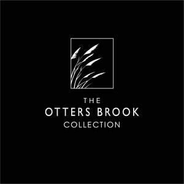
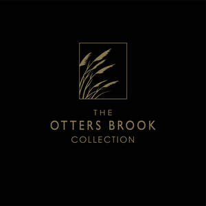

Trade Mark Journal No.2025/028 11 July 2025
UK00004225762 27 June 2025 (11,14,16,21,26,28)
Mark 1

Mark 2

Mark 3

- Class 11
- Christmas lights [other than candles]; Ornaments for christmas trees [lights]; Lamps for christmas trees; Christmas tree ornaments for illumination [electric lights]; Decorative lighting for christmas trees; Lights, electric, for Christmas trees; Christmas trees (Electric lights for -); Electric lights for Christmas trees; Installations for lighting christmas trees; Fairy lights for festive decorations; Fairy lights for festive decoration; Lights for festive decoration; String lights for festive decoration; Electric lights for festive decorations; Lamps for festive decoration; Electric holiday lights; Chinese lanterns.
- Class 14
- Holiday ornaments [figurines] of precious metal, other than tree ornaments.
- Class 16
- Christmas cards; Christmas gift wrap; Holiday cards; Birthday cards; Party ornaments of paper; Gift wrap cards; Gift tags; Gift wrapping paper; Paper cake decorations; Paper gift tags; Paper party decorations; Gift cards; Paper gift wrap bows; Paper bows for gift wrap; Gift wrap; Paper gift wrapping ribbons; Gift wrap paper; Giftwrapping paper; Paper gift wrap; Gift wrapping foil; Metallic gift wrapping paper; Metallic paper party decorations; Gift paper; Plastic gift wrap; Gift books; Musical greetings cards; Paper gift boxes; Metallic gift wrap; Gift boxes; Bows for decorating packaging.
- Class 21
- Flower vases; Holders for flowers and plants [flower arranging]; Ritual flower vases; Flower pots; Pots (Flower -); Flower baskets; Bowls for floral decorations; Pots for flowers.
- Class 26
- Artificial Christmas wreaths; Artificial Christmas garlands; Pre-lit artificial Christmas wreaths; Pre-lit artificial Christmas garlands; Artificial Christmas wreaths incorporating lights; Artificial Christmas garlands incorporating lights; Artificial trees [other than Christmas trees]; Artificial trees, other than Christmas trees; Artificial plants, other than Christmas trees; Ribbons for gift wrapping; Textile bows for gift wrapping; Ribbons and bows, not of paper, for gift wrapping; Textile ribbons for gift wrapping; Hat ornaments; Tinsels [trimmings for clothing]; Bouquets of artificial flowers; Silk flowers; Artificial flowers of textile; Rosettes [haberdashery]; Ornamental bows of textile for decoration; Artificial flower wreaths; Artificial flower arrangements.
- Class 28
- Christmas stockings; Christmas tree decorations; Christmas crackers; Christmas tree ornaments; Christmas dolls; Decorations for Christmas trees; Toy Christmas trees; Ornaments for Christmas trees; Christmas tree decorations and ornaments; Tinsel for decorating Christmas trees; Musical Christmas tree ornaments; Christmas tree skirts; Non-edible christmas tree ornaments; Bells for Christmas trees; Christmas tree [synthetic]; Decorations and ornaments for Christmas trees; Christmas tree decorations [other than edible or for illumination]; Christmas tree stands; Festive decorations, party novelties and artificial Christmas trees; Christmas trees (Artificial -); Artificial Christmas trees; Ornaments for Christmas trees, except lights, candles and confectionery; Christmas crackers [party novelties]; Candle holders for Christmas trees; Snow for Christmas trees (Artificial -); Artificial snow for Christmas trees; Ornaments for Christmas trees, except illumination articles and confectionery; Christmas trees (Ornaments for -), except illumination articles and confectionery; Christmas tree stand covers; Explosive bonbons [Christmas crackers]; Bonbons (Explosive -) [Christmas crackers]; Christmas trees of synthetic material; Halloween masks; Toy snow globes.
Festive Productions Limited